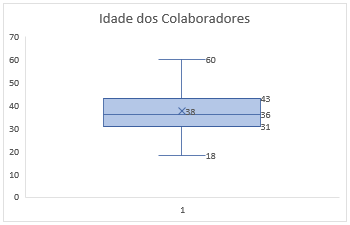
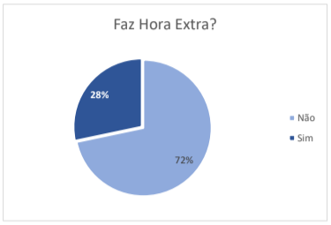
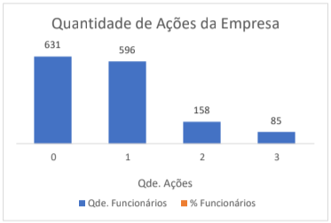
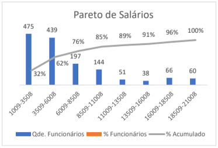
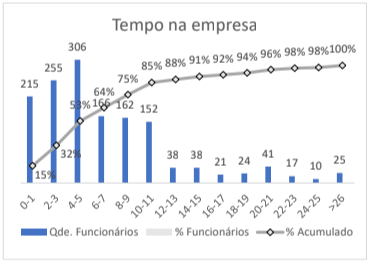

16% está 6% do índice considerado saudável de turnover em uma empresa.
16% está 6% do índice considerado saudável de turnover em uma empresa.

Distribuição da idade dos funcionários possui uma concentração maior na faixa entre 31 e 43 anos.

72% das necessidades de produção da empresa são atendidas pela jornada celetista.

É preciso compreender melhor a dinâmica da participação acionária para funcionários.

62% dos funcionários têm salários de té 6 mil.

Quase 60% dos funcionários tem até 5 anos de empresa